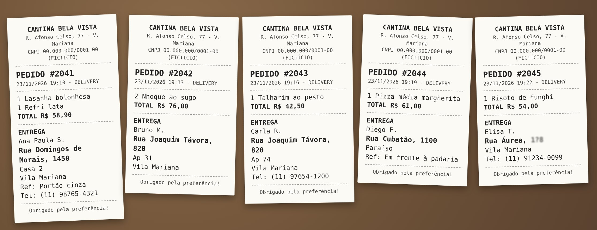

RotaPronta
Antes de cada saída
O motoboy perde tempo com as notinhas
1Ler cada endereço
2Pesquisar um por um
3Decidir a ordem de entrega

1
Fotografe as notinhas de uma vez
Várias notinhas lado a lado numa foto só. Dá para juntar mais fotos no mesmo lote.
2
O app identifica cada pedido
Cada notinha vira um pedido, ligado à foto de origem. O cabeçalho do restaurante não entra.
0pedidos encontrados
3
Você resolve só as dúvidas
Endereços lidos com segurança seguem direto. Os duvidosos aparecem com a foto ao lado.
Número ilegível → ajustar no mapa
Notinha repetida → retirar
4
A rota sai organizada
Paradas numeradas no mapa, distância e duração estimadas. Pedidos no mesmo endereço continuam separados.
6 paradas · 7 pedidos
4,7 km · 34 min
Valores da demonstração: estimativa simulada em linha reta.
5
Um toque abre o Google Maps
Registre cada entrega e siga para a próxima. Os registros ficam salvos mesmo sem sinal.
0de 7 entregas concluídas


Para o restaurante
Lotes, entregadores e andamento num só painel

RotaPronta
Das notinhas à rota pronta, antes de sair.
Experimente a demonstração
Demonstração com restaurante, clientes e pedidos fictícios. Leitura, localização e tempos simulados.